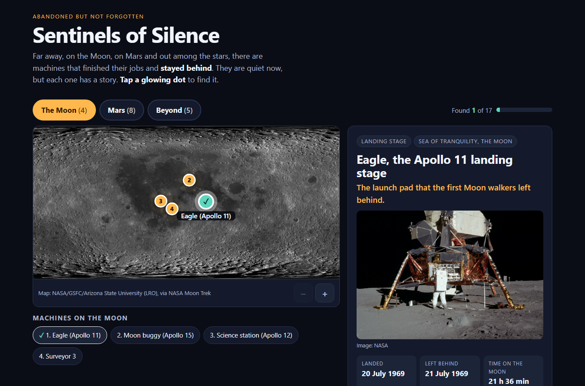
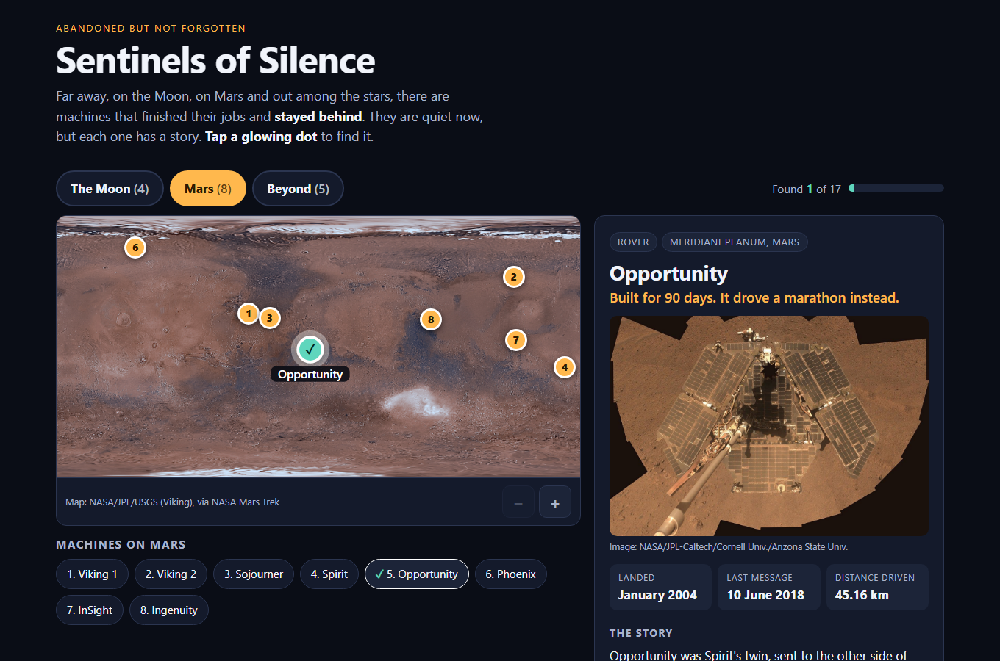
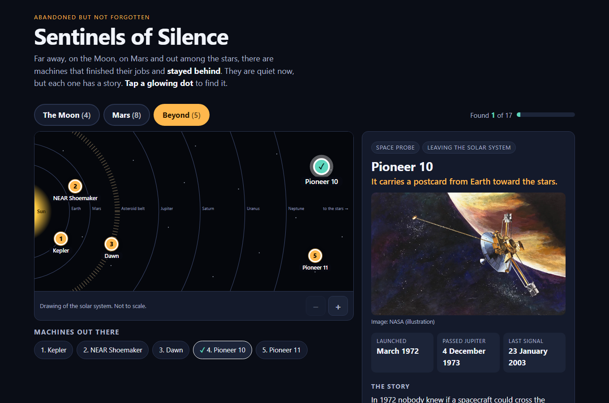
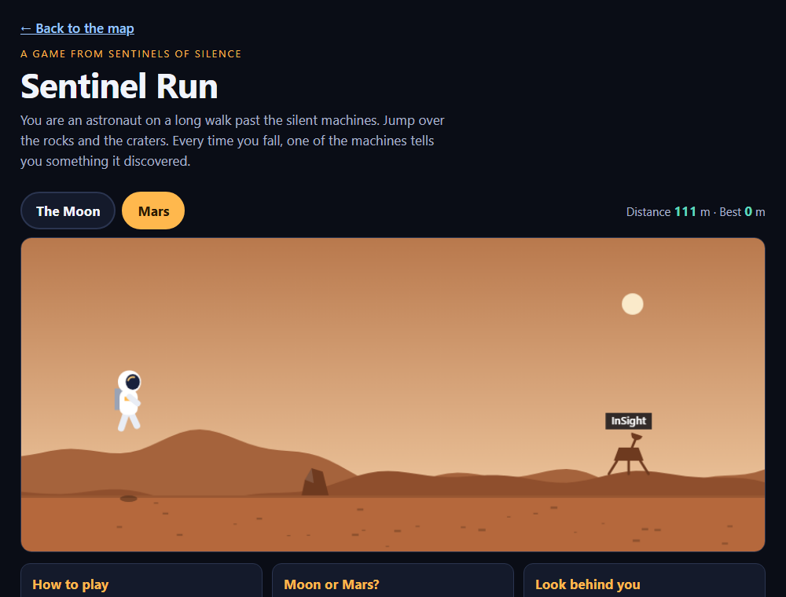

2026 NASA Space Apps Challenge · Abandoned but not Forgotten
A map of the machines that stayed behind,
for explorers aged 8 to 11.
Team Centinela del Silencio · Sharon Acosta
Medellín Local Event, Colombia
Why this challenge
Children hear about the missions that are flying today. The machines that finished their work are still out there, on the Moon, on Mars and beyond, and their stories live in technical pages written for adults.
This project turns those pages into something a 9-year-old can explore alone.
2 / 7The project
How a story is told

NASA data and resources
The pins are placed with the latitude and longitude printed by NASA. Where two NASA pages disagree on a date, the card shows only the month. All the collected facts are in data/artifacts.json, each with its source.
5 / 7Beyond the planets
Built for children: large buttons, keyboard access, image descriptions, and no pulsing for people who ask for reduced motion.

What a child takes home
And a game: Sentinel Run. An astronaut runs across the Moon or Mars and jumps over rocks and craters. Every fall shows a real fact from one of the machines.
Next steps: a Spanish version, a read-aloud voice and a guide for teachers.
